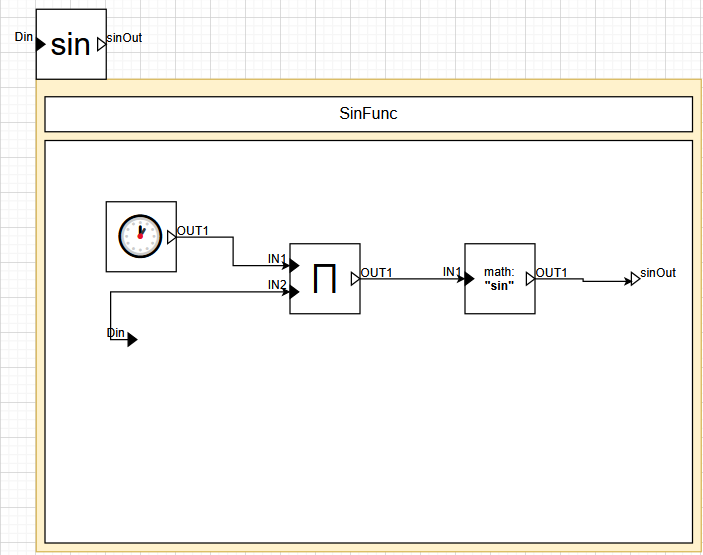
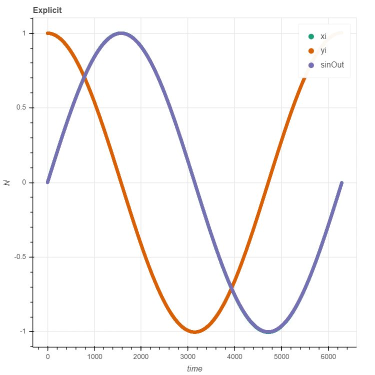

Name : Daniëlle Jongstra
Student ID : 20172260
e-mail : Danielle.jongstra@student.uantwerpen.be
Name : Joanna Kisaakye
Student ID : 20205490
e-mail : joanna.kisaakye@student.uantwerpen.be
Time spent on this assignment (in hours):
The assignment
The last part of each title specifies who (mainly) worked on that part of the assignment.
Solution 2&3: Discrete-Time CBD simulator - Together
For this part we filled in all the blanks in the file CBD.py. The compute functions now use the input signals of the block
to get the correct signal generated by the block. How these input signals are used exactly depend on the kind of block we are computing.
The getDependencies function in the class DelayBlock also needed to be implemented. This block has no algebraic dependencies, except for the first iteration (time = 0).
During the first iteration, it depends on the block connected to the IC port. This is implemented as a condition on the current iteration and returns the block connected
to IC if the iteration is 0, else it returns and empty list.
A causal block diagram can contain strong components, which are loops. Such a strong component its values can be computed by solving a linear set of equations. To be able to do this,
the blocks in the strong component have to be representable by a linear equation. Blocks such as the comparison blocks, the modulo block and the logical and and or block can not be represented as a linear equation.
In checking the linearity of the strong component, the function returns false if one of these blocks are encountered. The product block is a special case. It can be represented as a linear equation if at least one of
the values of the input ports is known, else it is not linear and a false value is returned by the function checking for linearity. If the product block has at least one known input and all other blocks in the strong component are also linear, then the strong component is linear
and the checking function returns a true value.
Solution 5: Pseudo-Random Number Generator - Daniëlle
Figure 1: The CBD for the pseudo-random number generator
In figure 1 is the CBD for the pseudo-random number generator. To view this on diagrams.net import the file Pseudo-Random.drawio.
From this drawio file the python CBD has automatically been generated in pseudo-random.py. The initial value x0 is a constant 0 in figure 1. In the implementation this block can be assigned any constant number in the initialization of the CBD.
By using a constant block instead of a input port for x0 in the drawing, there was no need to manually make a constant block to connect to the input port of x0. The only thing needed to be done was adding a input variable to the initialization of the CBD and
giving the constant block x0 the value of this variable. By running pseudo-random.py, the CBD is automatically simulated for every value x0 between 0 and 8. The period for every x0 is 9, so the generator its period does not depend on the initial x.
Solution 6: Explicit vs. Implicit Equations - Daniëlle

Figure 2: The CBD for the sinus function
The result of the implicit and explicit equations needs to be compared to values of the sinus function. The CBD for this sinus function is in figure 2. The value of D is multiplied with the clock value to get the right steps size.
The rest of the CBD if the same as the same as the example SinGen.xml.
Figure 3: The CBD for the set of explicit equations
The CBD for the explicit equations is shown in figure 3 and is also in ExplicitEquation.drawio. The delay blocks contain the values of x and y.
For the explicit equations, the values that the delay blocks output are immediately used to calculate the next value of x and y. The value of D is a constant 0.1 in figure 3, however it can change and for this the same approach is used as for x0 in part 5 of the assignment.
The outputs for every iteration i are the value of x(i), y(i) and sinus(Di).
Figure 4: The results of the simulation for the explicit equations using D = 0.1

Figure 5: The results of the simulation for the explicit equations using D = 0.001
The python simulation of the explicit CBD can be found in explicit.py. The results for D=0.1 and D=0.001 are in figure 4 and figure 5.
It can be seen that D=0.001 almost falls together with the actual sinus function. For D=0.1 the difference is quite big, approximately 0.25.
Figure 6: The CBD for the set of implicit equations
The CBD for the implicit equations is shown in figure 6 and is also in ExplicitEquation.drawio. These equations do not immediately use the values of x and y,
but first calculate the next value of y to calculate x, and x to calculate y. Because of this, there is a strong component in the CBD. For the value of D in this CBD, the same thing applies as for D in the explicit CBD.
The outputs for every iteration i are the value of x(i), y(i) and sinus(Di).
Figure 7: The results of the simulation for the implicit equations using D = 0.1Figure 8: The results of the simulation for the implicit equations using D = 0.001
The python simulation of the implicit CBD can be found in implicit.py. The results for D=0.1 and D=0.001 are in figure 7 and figure 8.
For D=0.001 the values again almost fall together with the sinus function, just as in the simulation for the explicit equations. For D=0.1, the difference with the sinus function is approximately 0.25.
In conclusion, D approaching but not equal to zero is better to model the sinus function than a larger D. There is not a big difference in error for using implicit equations or explicit equations.
However, the implicit equations model stays within the bounds of the sinus while the explicit equations model does not. This might be important, depending on in what situation the model is used.